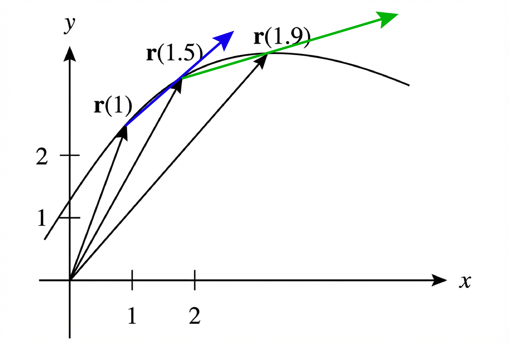
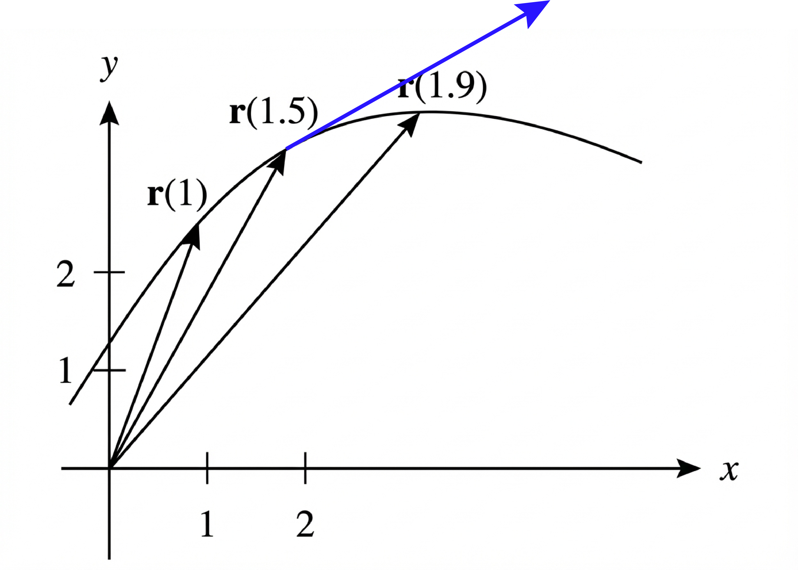
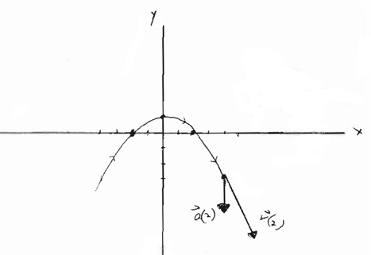
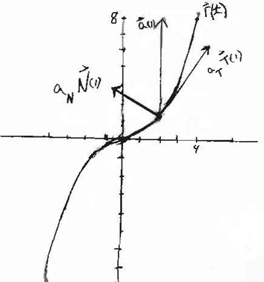

Homework Section 13.4 - Answers
-
- The average velocity vector is `2[bb(r)(1.5) - bb(r)(1)]` with its tail at the tip of `bb(r)(1)` in the below picture.
- The average velocity vector is `2.5[bb(r)(1.9) - bb(r)(1.5)]` with its tail at the tip of `bb(r)(1.5)` in the below picture.

- `bb(v)(1.5) = lim_(h->0) (bb(r)(1.5+h) - bb(r)(1.5))/h`
- Estimate the length of `bb(v)(1.5)` to be the average of the lengths of the two average velocity vectors from parts (a) and (b) according to the scale of the picture. Answers will vary a lot, but the speed should be just over 3.0 units/time (in terms of 1 unit on the x or y-axis).

-
- `bb(v)(t) = 2bb(i) - 2t bb(j)`, `bb(a)(t) = -2bb(j)`, Speed: `||bb(v)(t)|| = 2sqrt(1 + t^2)`

-
- `bb(v)(t) = << 6t, 2, -3t^2 >>`, `bb(a)(t) = << 6, 0, -6t >>`, Speed: `sqrt(9t^4+36t^2+4)`
- `bb(v)(t) = 2bb(i) - sin t bb(j) - cos t bb(k)`, `bb(a)(t) = -cos t bb(j) + sin t bb(k)`, Speed: `sqrt(5)`
- `bb(r)(t) = t bb(i) + (t^2/2 + 1) bb(j) + (t - 1) bb(k)`
- `t = 2/25` of a second
-
- Range: `14139.7` meters
- Maximum height: `6122.4` meters
- Speed upon impact: `400` m/s
- `v_0 ~~ 26.2` m/s
- Approximately `6.369°` and `83.631°`
-
- `a_T = 0`, `a_N = 1`
- `a_T = 1/(e^(2t)+1)(-e^(-t)+e^(3t)))`, `a_N = (sqrt(2))/(e^(2t)+1)(1+e^(2t))`
-
`a_T(1) = 18/13(2 bb(i) + 3 bb(j))`, `a_N(1) = 12/13 (-3 bb(i) + 2 bb(j))`

- `bb(T)(1) = 1/2 (bb(i) - sqrt(2) bb(j) - bb(k))`, `bb(N)(1) = sqrt(2)/2 (bb(i) + bb(k))`, `bb(B)(1) = -1/2 bb(i) - sqrt(2)/2 bb(j) + 1/2 bb(k)`